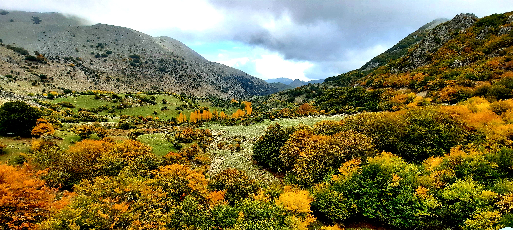

Vallone Faguara

ITALIANO - “Finestra” tettonica che espone i calcari marnosi con intercalazioni argillitiche della Formazione Mufara. L’affioramento risulta mal stratificato e dal caratteristico colore grigio‐giallastro, bruno alla frattura. (Trias Sup.)
INGLESE - I am Gaetano Ferrarelli